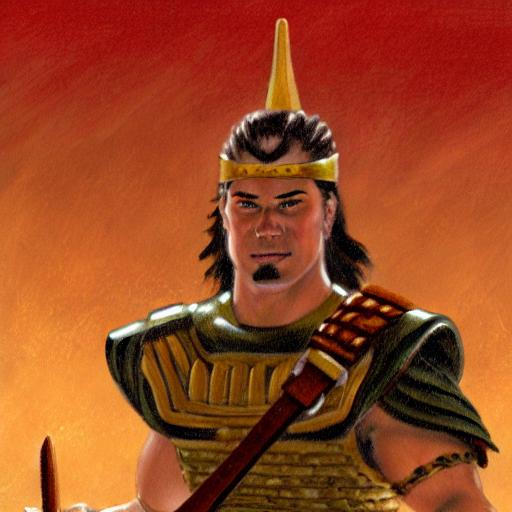

Brief biography
circa 63 B.C.

Ammoron was a Zoramite dissenter and the brother of Amalickiah during a twelve-year war between the Nephites and Lamanites. After the death of his brother, he became king of the Lamanites. He continued the war until he was killed by Teancum at the city of Moroni (Alma 62:36). He was the father of Tubaloth, who became king after his death (Helaman 1:16).
Total recorded words -- 323
Insights into words and phrases
Our sample of Ammoron’s words in the Book of Mormon is entirely derived from
an angry epistle to Captain Moroni during negotiations over an exchange of
prisoners (Alma 54:16-24). His letter reflects a cynical view that seems to
reject God (Alma 54:21). He claims that the purpose of the war was to avenge
the wrongs of the Lamanites and that the Nephites had wrongly usurped the
Lamanites’ rights of government (Alma 54:17, 24).
The rebellion
of Ammoron and his brother actually began when they sought to kill Helaman
and his brethren (Alma 46:2) and make Amalickiah king, contrary to Nephite
law (Alma 46:4). They were subsequently involved in a conspiracy to gain
power among the Lamanites, in which they secretly poisoned Lehonti, the
leader of a more moderate faction (Alma 47:18-19), and had the Lamanite king
assassinated (Alma 47:22-30). Ammoron’s posturing about defending Lamanite
rights was a façade to cover his own quest for power.
Ammoron
also implied that his ancestor Zoram was wronged by Lehi’s family when they
brought him out of Jerusalem with them (Alma 54:23). In this way, he
portrayed himself as a liberator who only wanted what was just and fair,
fighting against Nephite oppressors. Moroni knew, however, that Ammoron "had
a perfect knowledge of his fraud" (55:1), and that these claims were false.
Book of Mormon speakers use the adverb "rightly" only three
times in the entire text. Two of these are from Ammoron. The adverb "gladly"
is also used only three times in the text. One of these comes from Ammoron.
He uses the words "wage" and "waged" one time each, and all other Book of
Mormon speakers combined only use those words two more times each. The word
"bold" is used only three times in the Book of Mormon; Ammoron uses "bold"
once in only 323 words. The word "avenge" is used six times in the Book of
Mormon. Two of these come from Ammoron’s letter to Moroni.
Ammoron is the only Book of Mormon speaker to use the words
"extinction" and "hinted."
Personal application
Ammoron’s brief words give us an example of how servants of the adversary sometimes present a public face of concern for justice to cover their own selfish motivations.